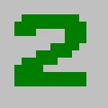
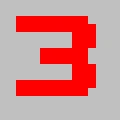
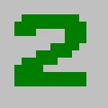
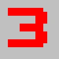
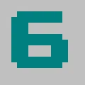
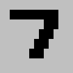
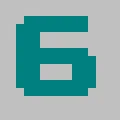
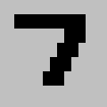

Minesweeper Documentation
Welcome to The Minesweeper Documentation! Whether you're a beginner or an experienced player, this guide will help you master the art of Minesweeper. Learn the rules, strategies, and even speed running techniques to become a Minesweeper pro.
Introduction
The Minesweeper board consists of various characters representing different elements. Understanding these characters is crucial for playing the game:
- : Represents a covered square that may or may not contain a mine.
- : Indicates an uncovered square with no mines around it.
  
  
  
   : Indicates the number of mines in adjacent squares when revealed.
: Indicates the number of mines in adjacent squares when revealed. : A flagged square, marked by the player as a potential mine.
: A flagged square, marked by the player as a potential mine.
 : A revealed mine and a revealed mine that has been clicked respectfully. Both indicate a game that has ended.
: A revealed mine and a revealed mine that has been clicked respectfully. Both indicate a game that has ended.

Controls
- Left Click: Reveal a square
- Right Click: Mark a square with a flag

Step 1: Click to Reveal
Start by left-clicking on a covered square to reveal its content. The grid is initially filled with covered squares, and your goal is to uncover all non-mine squares.

Step 2: Use Numbers
Numbers on revealed squares indicate the count of mines in adjacent squares. Leverage this information to deduce mine locations. If a square has the number "2," two mines are present in the surrounding eight squares.
Step 3: Avoid Mines
Caution is crucial. If you accidentally reveal a mine, the game ends. Mines are randomly scattered, making each move a calculated risk. Be strategic and observe the numbers to identify potential mine locations.
Step 4: Mark with Flags
Right-click on a square to mark it with a flag if you suspect it contains a mine. Flagging helps keep track of potential mines and avoids accidental clicks.
Step 5: Win the Game
Continue revealing and flagging until all non-mine squares are uncovered. A successful completion reveals a safe configuration.
Speed Running Techniques
If you're aiming for speed, consider the following techniques:
- Pattern Recognition: Learn common mine patterns to quickly identify safe moves.
- Flagging Strategies: Develop efficient flagging strategies to mark potential mine locations.
- Memory Skills: Improve memory to recall the board's status and avoid revisiting known safe areas.
- Optimized Clicking: Practice precise clicking to minimize errors and speed up gameplay.
FAQ
Here are some frequently asked questions about Minesweeper:
- Q: Can I play Minesweeper on mobile?
A: There are mobile versions and apps available for Minesweeper on various platforms. - Q: How does scoring work in Minesweeper?
A: Scoring is typically based on the time taken to complete a game. Faster times result in higher scores. - Q: Are there different difficulty levels?
A: Yes, Minesweeper often comes with different difficulty levels, adjusting the size of the grid and the number of mines.
Troubleshooting
If you encounter issues while playing Minesweeper, consider the following troubleshooting tips:
- Ensure Software Updates: Make sure your Minesweeper application is up-to-date with the latest software version.
- Check System Requirements: Verify that your system meets the minimum requirements for running Minesweeper.
- Graphics Driver Update: Update your graphics drivers to prevent performance or display issues.
- Reinstall Minesweeper: If problems persist, try reinstalling Minesweeper to resolve potential software corruption or restart the game.
- If problems persist: contact emmettnicholas@gmail.com.
Licensing
The owner of the website used is EMMETT NICHOLAS. The license for Minesweeper may vary depending on the version and distributor, so it's crucial to review the specific license agreement provided with the software to understand its terms. Adhering to these terms ensures compliance and proper use of Minesweeper.